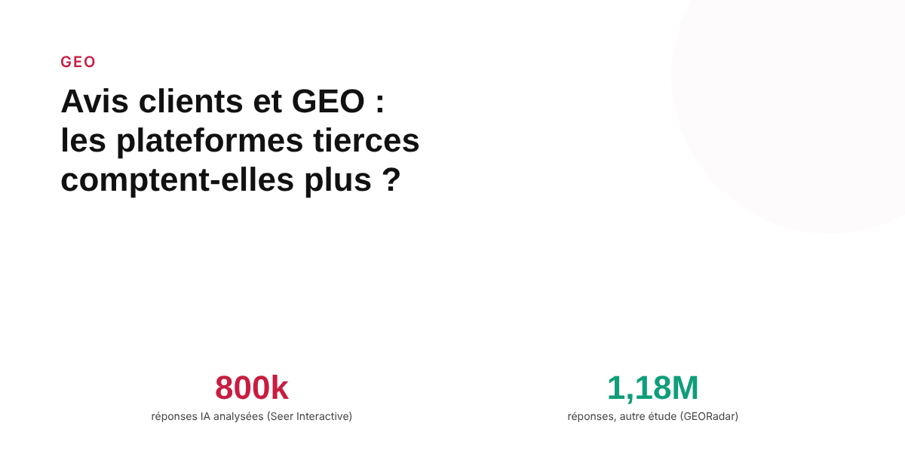
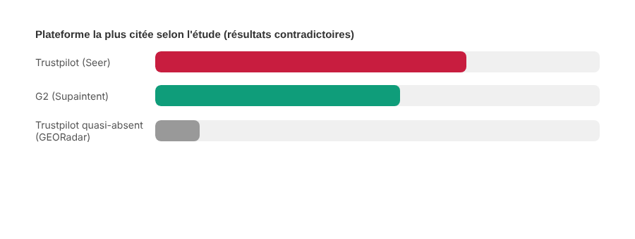

Avis clients et GEO : les plateformes tierces comptent-elles plus que votre propre site aux yeux des IA ?
Plusieurs études portant sur des centaines de milliers de réponses de ChatGPT, Perplexity et Google AI Mode arrivent à la même observation générale, avec des chiffres très différents selon la méthode : les plateformes d'avis tierces reviennent souvent dans les réponses, parfois plus qu'un site de marque.

Demandez à ChatGPT ou à Perplexity ce qu'il pense d'un logiciel ou d'une marque, et il y a de bonnes chances que la réponse s'appuie sur ce que disent des tiers — avis clients, forums, comparatifs — plutôt que sur le site de la marque elle-même. Plusieurs études publiées en 2026 ont tenté de quantifier ce phénomène sur de larges volumes de réponses réelles. Les chiffres qu'elles obtiennent divergent fortement, mais la direction générale — oui, les plateformes tierces comptent beaucoup — revient dans presque toutes.
Des volumes d'études larges, mais des résultats très différents entre eux
L'étude la plus citée dans ce domaine vient de Seer Interactive, qui a analysé environ 800 000 réponses IA couvrant ChatGPT, Google AI Mode, Gemini et Perplexity : Trustpilot y apparaît comme le site d'avis le plus cité, plus de deux fois plus souvent que le deuxième. ChatGPT aurait même, selon cette étude, traité l'absence de profil Trustpilot comme un signal de moindre fiabilité. Une autre étude, menée par Supaintent sur 167 514 réponses collectées entre août et novembre 2026, aboutit à un classement différent : les sites d'avis y apparaissent dans 15,5 % des réponses ChatGPT, 13,6 % des réponses Perplexity, 9,6 % de Google AI Mode et 6,4 % de Gemini — avec G2, cette fois, en tête de chaque moteur plutôt que Trustpilot. Un troisième jeu de données, GEORadar, portant sur environ 1,18 million de réponses sourcées, trouve Trustpilot dans seulement 0,27 % des cas, et situe Reddit beaucoup plus haut, à 6,17 %. Ces écarts tiennent probablement aux périmètres de requêtes testées, aux moteurs inclus et aux méthodes de comptage — ils ne sont pas directement comparables entre eux, et aucun chiffre unique ne peut être présenté comme « le » taux de citation des avis tiers.
Reddit, un cas à part qui recoupe et dépasse les sites d'avis
Une analyse spécifique des citations ChatGPT aux États-Unis place Wikipédia en tête avec environ 13,15 % des citations totales, suivi de près par Reddit à environ 11,97 %. L'explication qualitative avancée dans plusieurs sources tient à la nature du contenu : Reddit regroupe des témoignages d'usage réel, des comparatifs spontanés et des critiques formulées par des utilisateurs tiers — exactement le type de contenu qu'un site de marque ne peut, par construction, pas produire sur lui-même de façon crédible.

Ce que ça signifie pour une marque, au-delà des pourcentages
Une analyse distincte, portant sur des domaines présents simultanément sur plusieurs plateformes d'avis (Trustpilot, G2, Capterra), rapporte une moyenne de 4,6 à 6,3 citations dans ChatGPT, contre 1,8 pour les domaines absents de ces plateformes. C'est une corrélation, pas une preuve de causalité directe établie par la source elle-même — mais elle va dans le même sens que les études de volume : une présence active et à jour sur les plateformes d'avis pertinentes pour son secteur semble associée à une citation plus fréquente, indépendamment du soin apporté à son propre site.
Un signal de confiance documenté, pas un remplacement du site
Une étude publiée par G2 — qui a un intérêt commercial direct à ce résultat, ce qui justifie une lecture prudente — rapporte qu'une citation provenant d'un site d'avis logiciel ressort comme le signal de confiance le plus fort pour des acheteurs qui évaluent la fiabilité d'une réponse de chatbot. Aucune des études consultées ne suggère en revanche qu'un site de marque devienne inutile : elles documentent une présence fréquente des plateformes tierces dans les réponses IA, ce qui en fait un levier à travailler en complément du site, pas à sa place.
FAQ
Les IA génératives citent-elles vraiment plus souvent les avis tiers que le site de la marque elle-même ?
Plusieurs études indépendantes le suggèrent, avec des chiffres qui varient fortement selon la méthode. Une analyse de Supaintent portant sur plus de 167 000 réponses IA a trouvé des sites d'avis dans 15,5 % des réponses ChatGPT et 13,6 % des réponses Perplexity, avec G2 comme plateforme la plus citée sur chaque moteur testé. Un autre jeu de données, GEORadar, trouve des proportions beaucoup plus faibles pour Trustpilot. Les chiffres ne sont pas directement comparables entre études.
Pourquoi Reddit revient-il aussi souvent dans ces études de citations IA ?
Une analyse de citations ChatGPT aux États-Unis a trouvé Reddit présent dans environ 12 % des citations, derrière Wikipédia. L'explication avancée dans plusieurs sources est que Reddit offre des témoignages d'usage réel, des comparatifs et des critiques formulées par des tiers — un type de contenu qu'un site de marque, par nature, ne peut pas produire lui-même sur lui-même.
Faut-il abandonner son propre site pour se concentrer sur les plateformes d'avis ?
Rien dans ces études ne va dans ce sens. Elles montrent une présence fréquente des plateformes tierces dans les réponses IA, pas une inutilité du site de marque. Une étude de G2 (qui a un intérêt commercial direct dans ce résultat) rapporte même qu'une citation provenant d'un site d'avis logiciel ressort comme le signal de confiance le plus fort pour des acheteurs qui jugent une réponse de chatbot — un signal complémentaire, pas un substitut.
Envie de savoir où votre marque est réellement citée par les IA ?
Pour aller plus loin, voir la page GEO, et l'article Trust signals : ce qui rassure vraiment un visiteur avant l'achat.
Pour continuer sur ce sujet.